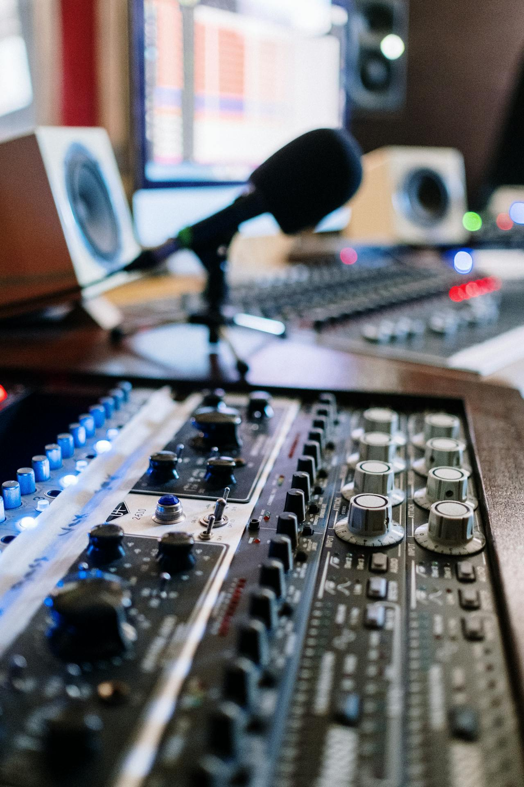

Services
You have a story to tell. Let us help you bring it to life.
Whether you're not sure where to get started, or if you need help placing the finishing touches on your masterpiece, 3 Jay Media's experts can keep your project flowing. Check out our list of services.

- Multi-track Recording and Mixing
We breathe new life into your music or audio project. Our experienced engineers will blend, balance, and enhance every detail to transform your raw recordings into a polished, broadcast-ready final product — all while offering the flexibility of individual re-records and the convenience of remote collaboration. For all your projects, we deliver the clarity and cohesion that makes your work stand out.
- Podcast Engineering
Our podcast engineering service delivers broadcast-quality audio that keeps your listeners engaged. We capture each speaker, guest, and audio element on separate tracks, giving our experienced engineers complete control to balance voices, remove background noise, and enhance clarity. From adjusting levels and optimizing sound dynamics to adding professional effects and seamless transitions, we provide listener-ready episodes — whether recording in-studio or remotely. From weekly shows and interview series to branded audio content, we deliver the crisp, professional sound that builds your audience and reputation.
- Videography and Editing
Let us record your most creative moments or transform your raw footage into compelling visual stories that captivate your audience. With our videography and editing service we capture every scene, angle, and moment with professional-grade equipment, then our experienced editors meticulously assemble, color-correct, and enhance each frame. From adjusting pacing and adding dynamic transitions to incorporating graphics, music, and sound design, we turn your footage into a polished, broadcast-ready final product. Whether you're producing corporate videos, social media content, documentaries, or branded films, we deliver the cinematic quality and storytelling that elevates your message and engages your viewers.
- Photography and Editing
Our photography and editing service transforms your moments into stunning visual art that tells your story. After capturing every detail, emotion, and scene with professional-grade equipment and expert composition, our experienced editors then meticulously enhance, retouch, and perfect each image. From color correction and lighting adjustments to creative filters, retouching, and seamless compositing, we turn your raw photos into polished, gallery-ready final products. Whether you're producing portrait collections, product photography, event coverage, or branded imagery, we deliver the visual excellence and artistic quality that showcases your subject and resonates with your audience.